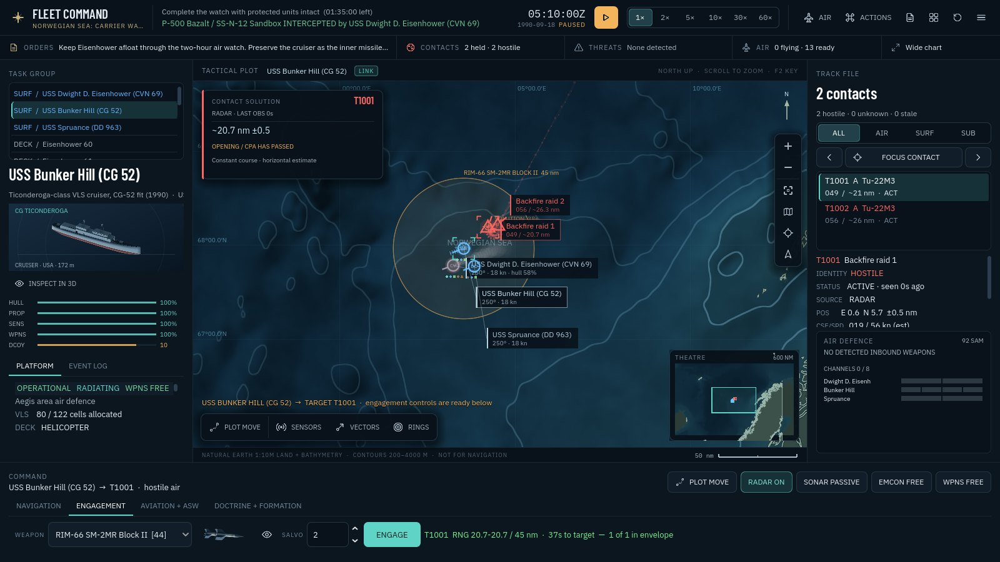
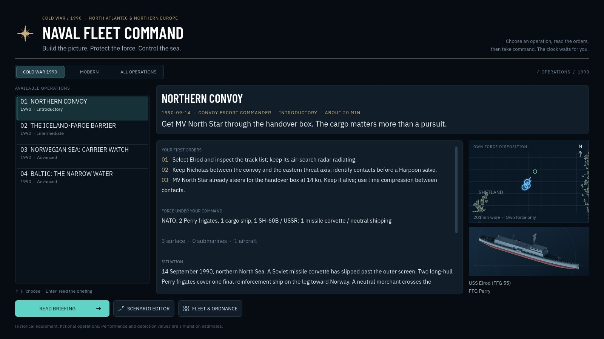
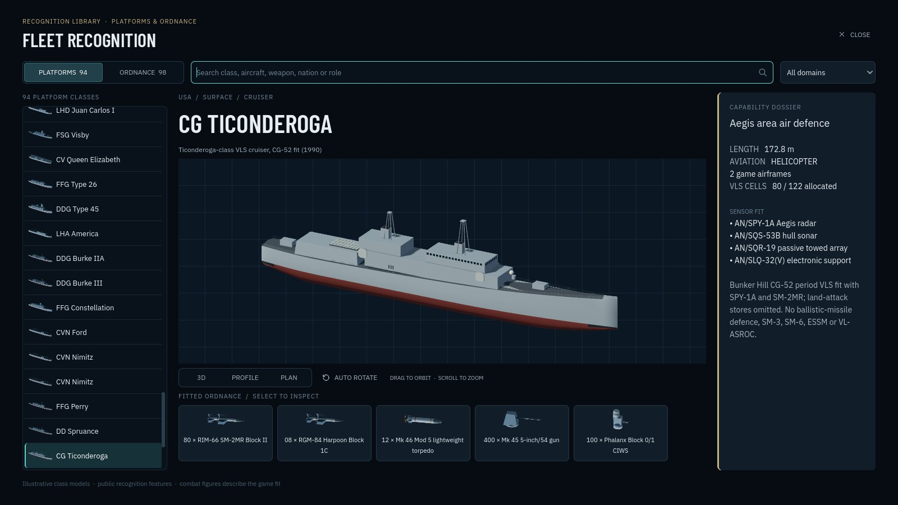

01 · Convoy escort
Northern Convoy
Two Perry frigates screen a reinforcement merchant against a missile corvette. The cargo matters more than a pursuit.
Introductory · about 20 minCold War · 1990 · North Atlantic & Northern Europe
Take command of a 1990 NATO task group. Get a convoy through, hunt a submarine in the Iceland–Faroe gap, or keep a carrier alive under Soviet missile pressure.
Free, no installDesktop or laptop with a keyboardChrome, Edge, Firefox or SafariAbout 71 MB, cached after the first visit

How it plays
Radar horizons, passive bearings, thermal layers and stale tracks mean the picture has to be built before it can be trusted. Unknown contacts classify with time and manoeuvre; a bearing is not a range until you work it into one.
Your ships defend themselves inside the limits of their fire-control channels and magazines. You decide emissions, station, posture and when a salvo is worth the missiles.
Four operations · four different jobs
Two Perry frigates screen a reinforcement merchant against a missile corvette. The cargo matters more than a pursuit.
Introductory · about 20 minDallas, Spruance and patrol aviation search for a Victor III at the Atlantic gateway. Work passive bearings and the layer to find it.
IntermediateEisenhower's air detachment and Bunker Hill hold a two-hour watch against a Soviet strike. Keep the carrier afloat.
AdvancedStop a Sovremennyy before it reaches the exit, and tell it apart from neutral traffic before you commit your missiles.
Advanced

Period variants keep their own radars, sonars, aircraft and weapons: Perry's shared Mk 13 magazine, Bunker Hill's SPY-1A, the F-14A+ and E-2C. Modern operations have their own filter.
Passive bearings, uncertain range, stale contacts, thermal layers and convergence zones. The picture is something you build, and it can be wrong.
A searchable Actions palette, a live status rail and a command dock that follows the selection. Pause whenever you need to think.
Choose Cold War 1990, pick the convoy operation, read the briefing, then take command. The clock waits for you.
It runs in your browser. Nothing to install, and the clock doesn't start until you do.